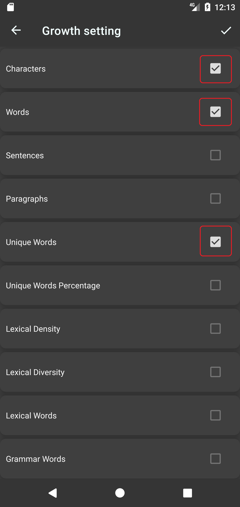

Text growth tracker is a tool that helps writers measure their progress and improvement over time. It can be used to track various aspects of writing, such as word count, vocabulary, lexical richness and grammar. By using text growth tracker, writers can gain insights into their strengths and weaknesses, set realistic goals, and celebrate their achievements.
Text growth tracker can have an encouraging effect on writers in several ways. First, it can motivate writers to write more consistently and frequently, as they can see the results of their efforts in a tangible way. Writing more can help writers develop their skills, confidence, and creativity. Second, it can help writers overcome writer's block, as they can use the feedback from text growth tracker to identify areas of improvement and generate new ideas. Writing with a clear purpose and direction can help writers overcome the fear of the blank page. Third, it can help writers appreciate their own growth and development, as they can compare their current and past performance and see how far they have come. Writing with a sense of accomplishment can help writers enjoy the process and express themselves more authentically.
Writer Journal introduces growth tracker feature that helps you achieve your writing goals in many aspects. For every single document, you can track its word count, sentence or paragraph count, unique words count, lexical richness and grammar density etc. Giving you insightful feedback on your growing writing skills.
To use growth tracker feature, you have to enable specific trackers in the settings page first. (See the screenshots)
Note that you can also reorder these growth trackers by drag and drop gesture, after enabling these growth trackers, your documents will not have growth chart yet until you modify the text content of your document
After you have enabled growth trackers, the growth charts for each document will be shown in the growth page of that document. Follow the steps below to view your growth charts. (See the screenshots)


Note that you can also use pinch gesture to zoom the graph, and tap a position on the graph to show more information.